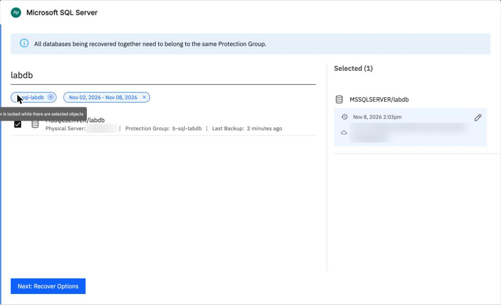
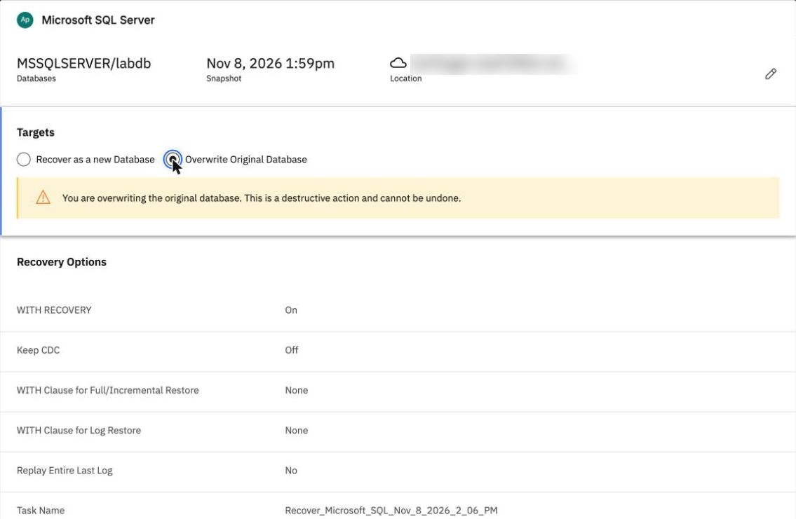
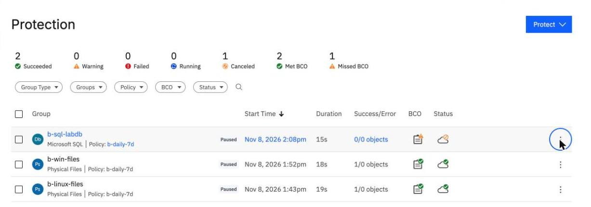
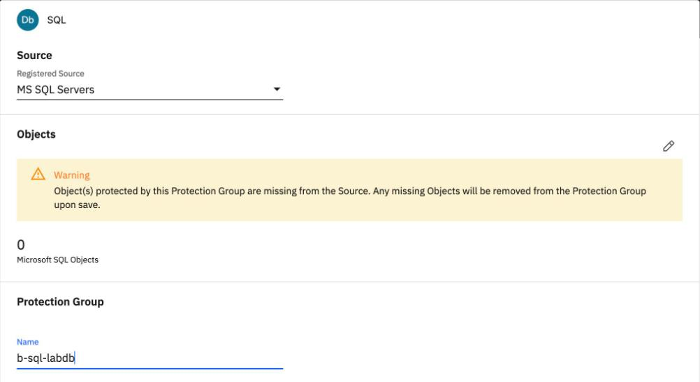

Restore SQL Server and compare the rows
By the end you can restore a SQL Server database over the original, prove it came back by comparing numbers, and spot why the next backup then reads nothing.
Northgate Freight is a made-up company. Its SQL Server on a Windows server holds a database called labdb. Today it drops the database on purpose, restores it from the backup and compares the numbers.
Every number and screen in this unit comes from real runs in our lab: 7 October 2026 for the command line and 8 November 2026 for the console. The location of the backup is blurred in the screenshots.
Drop it, restore it, compare
The test drops labdb, restores it from the backup to its original place, and compares its row count and checksum with the numbers taken before.
After the restore, what does Northgate compare?
Show the answer
The test compares the row count and the checksum: 100,000 rows, and the checksum matches. The restore took 23 s.
In the console run, labdb held 105,000 rows by then, yet the restore used the first backup, taken at 13:59 with 100,000 rows. Why?
Show the answer
The lab chose the first backup so that the result could be compared with C:\sql\labdb-before.txt. To pick another backup, click the pencil beside the recovery point, choose List, pick the time and click Select Recovery Point.
Check the restored database
Run each command in turn. The output is what the lab recorded on 7 October 2026. The numbers are the lab's own.
after the drop, 7 October 2026
Q "SELECT COUNT(*) FROM sys.databases WHERE name='labdb'"
0
No database named labdb is left.
The restore ran for 23 seconds. If the data came back unchanged, how will the second line compare with the first?
Show the answer
The check printed the same row count and the same checksum on both lines.
12:36:40 UTC, after the restore
powershell -NoProfile -File verifydb.ps1
before: 100000,1393371002 after: 100000,1393371002
100,000 rows and the same checksum before and after.
Our lab ran this from a file, copied to the server with scp.
Restore over the original
These screens come from the BRS console in our lab on 8 November 2026. Click where you would click. After two misses the right place is marked.

labdb is ticked and the latest backup is chosen. Where do you click to choose another backup?
Show where
Right. The pencil beside the recovery point. Choose List, pick the time and click Select Recovery Point. Then click Next: Recover Options.

You chose Overwrite Original Database. Where does the console warn you about it?
Show where
Right. The yellow box reads "You are overwriting the original database. This is a destructive action and cannot be undone." Targets starts at Recover as a new Database. Click Recover. In our lab on 8 November it succeeded in 23 s.
The next backup reads nothing
Northgate checks the restored database. Then the group runs again.
14:07 UTC restore Succeeded in 23 s
14:08 labdb checked: 100000 rows, same checksum
14:08:22 next group run: read 0 bytes, lists only the host
Protection list: 0/0 objects
What went wrong?
Show the answer
After the restore the database has a new ID. In the console run, labdb got the ID 656 and the group still held 652. In the command-line run, 49 became 53. The protection group still points at the old one, so the next backup protects nothing and gives only a warning.
The run's Cloud Archive tab says Canceled, with a [1-1-36] periodic-full message. Is that the cause?
Show the answer
The message is the periodic-full message from the backup run and is not the cause.

This is the group after the restore. Where does the list show that it protects nothing?
Show where
Right. 0/0 objects. The run at 14:08:22 UTC read 0 bytes and listed only the host.

You open the group's menu and click Edit. Where does the page say what is wrong?
Show where
Right. The warning says objects of the group are missing from the source and will be removed when you save. To fix it, click the pencil under Objects, tick labdb again and click Save. In our lab on 8 November the next run read 50.5 MB, a full backup of the new database, and listed MSSQLSERVER/labdb again.
Watch for this. Update the group after a restore, or protect the instance with auto-protect, which was not tested. No point-in-time restore, log backup or restore to another instance was tested.
Three questions
After a restore over the original database, the next group run reads 0 bytes. What do you do?
Show the answer
The Edit page says objects of the group are missing from the source. Tick labdb again and click Save. In our lab the next run then read 50.5 MB.
In the console, which choice does Targets start at?
Show the answer
Targets starts at Recover as a new Database. Overwrite Original Database shows a warning that it cannot be undone.
Review from unit 4.2. In the console, how do you avoid the Windows path problem?
Show the answer
The browser shows the drive as a folder named C. You open it and tick docs; the selection reads /C/data.
You can restore a database and prove it
Drop, restore, then compare the row count and checksum: 100,000 rows and the same checksum in our lab. After a restore over the original, the database has a new ID in BRS, so edit the group and tick it again.